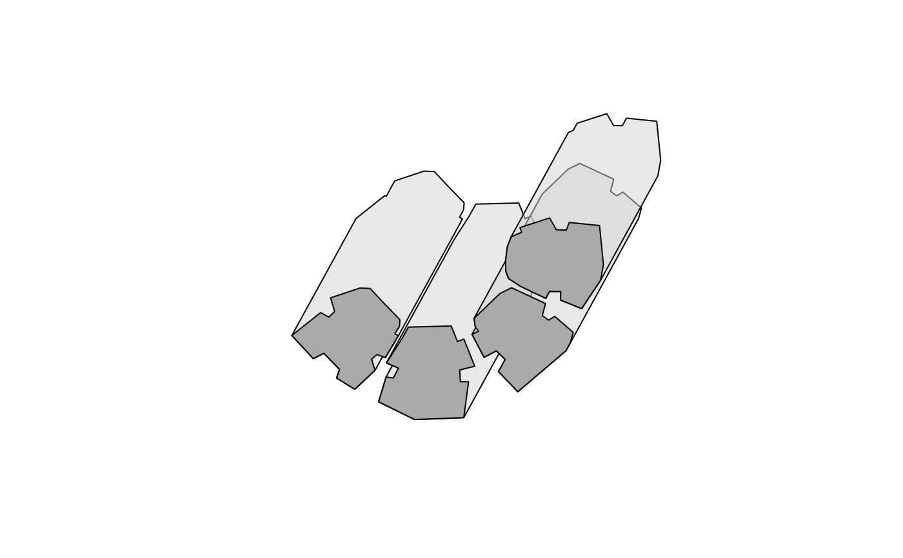

Creates a polygonal layer of shadow footprints on the ground, taking into account:
Obstacles outline (obstacles), given by a polygonal layer with a height attribute (obstacles_height_field)
Sun position (solar_pos), given by azimuth and elevation angles
The calculation method was inspired by Morel Weisthal's MSc thesis at the Ben-Gurion University of the Negev.
# S4 method for SpatialPolygonsDataFrame shadowFootprint( obstacles, obstacles_height_field, solar_pos = solarpos2(obstacles, time), time = NULL, b = 0.01 )
| obstacles | A |
|---|---|
| obstacles_height_field | Name of attribute in |
| solar_pos | A |
| time | When |
| b | Buffer size for shadow footprints of individual segments of a given polygon; used to eliminate minor internal holes in the resulting shadow polygon. |
A SpatialPolygonsDataFrame object representing shadow footprint, plus buildings outline. Object length is the same as that of the input obstacles, with an individual footprint feature for each obstacle.
Weisthal, M. (2014). Assessment of potential energy savings in Israel through climate-aware residential building design (MSc Thesis, Ben-Gurion University of the Negev). https://www.dropbox.com/s/bztnh1fi9znmswj/Thesis_Morel_Weisthal.pdf?dl=1
location = rgeos::gCentroid(build) time = as.POSIXct("2004-12-24 13:30:00", tz = "Asia/Jerusalem") solar_pos = maptools::solarpos( matrix(c(34.7767978098526, 31.9665936050395), ncol = 2), time ) footprint1 = ## Using 'solar_pos' shadowFootprint( obstacles = build, obstacles_height_field = "BLDG_HT", solar_pos = solar_pos )#> Warning: CRS object has comment, which is lost in output#> Warning: CRS object has comment, which is lost in output#> Warning: spgeom1 and spgeom2 have different proj4 strings#> Warning: CRS object has comment, which is lost in output#> Warning: spgeom1 and spgeom2 have different proj4 strings#> Warning: CRS object has comment, which is lost in output#> Warning: spgeom1 and spgeom2 have different proj4 strings#> Warning: CRS object has comment, which is lost in output#> Warning: spgeom1 and spgeom2 have different proj4 stringsfootprint2 = ## Using 'time' shadowFootprint( obstacles = build, obstacles_height_field = "BLDG_HT", time = time )#> Warning: CRS object has comment, which is lost in output#> Warning: CRS object has comment, which is lost in output#> Warning: spgeom1 and spgeom2 have different proj4 strings#> Warning: CRS object has comment, which is lost in output#> Warning: spgeom1 and spgeom2 have different proj4 strings#> Warning: CRS object has comment, which is lost in output#> Warning: spgeom1 and spgeom2 have different proj4 strings#> Warning: CRS object has comment, which is lost in output#> Warning: spgeom1 and spgeom2 have different proj4 strings#> [1] TRUE